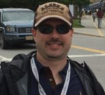

Danny Peon
IT Support Specialist

Summary
Experienced IT professional seeking opportunities in software or web development. Proficient in C++, C#.NET, Java, Python, HTML/CSS/JavaScript and React.
Education
-
Nucamp Coding Bootcamp - Completed 2020
-
Vanderbilt University - Computer Science Degree 1998-2002
Work Experience
-
Help Desk Analyst | Travel Traders LLC | 2015-Present
-
Responsible for resolving IT related issues, including but not limited to: user access issues, store setups/remodels, inventory, etc.
-
PC and POS Hardware and software at over 200 locations, including hotel gift shops, and offices responsible for managing these locations
-
IT LAN Administrator | Florida Power & Light | 2010-2012
-
Responsible for troubleshooting issues with computers, cell phones, tablets, and other devices.
-
Act as liaison between IM (Information Management) and other business units.
-
Help Desk Representative | Florida Power & Light | Miami, FL | 2005-2010
-
Responsible for being the first point of contact for handling all IT-related incoming calls related to technology for the entire company.
Key Skills & Characteristics
- Fluent in Spanish
-
Strong communication skills
- Computer hardware: building,
repair, and upgrades
- HTML/CSS
- JavaScript/Node.js/jQuery
- Java
- Python/Django
- Linux/CLI
Honors
- Chancellor’s Scholar, Vanderbilt University
- Rennselaer Polytechnic University Medal
- Eagle Scout
Hobbies
Contact Me